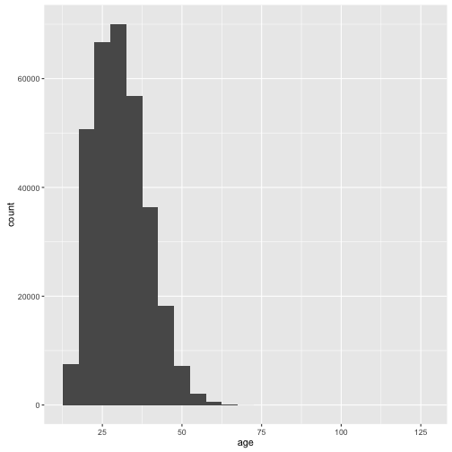
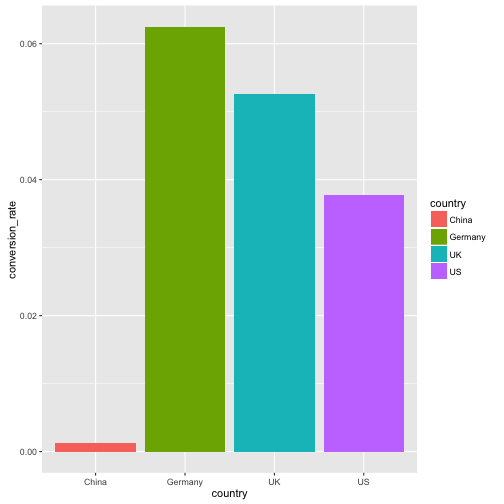
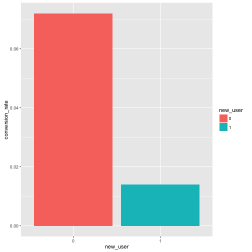
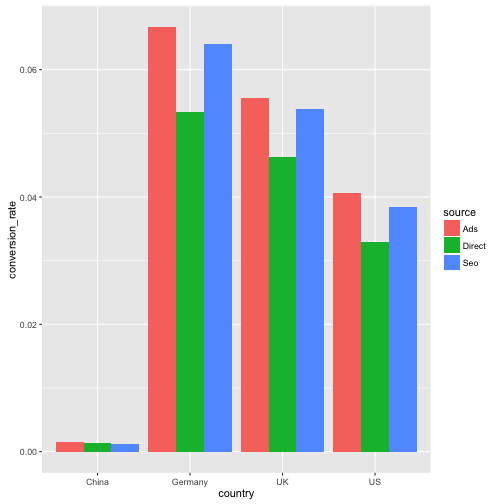
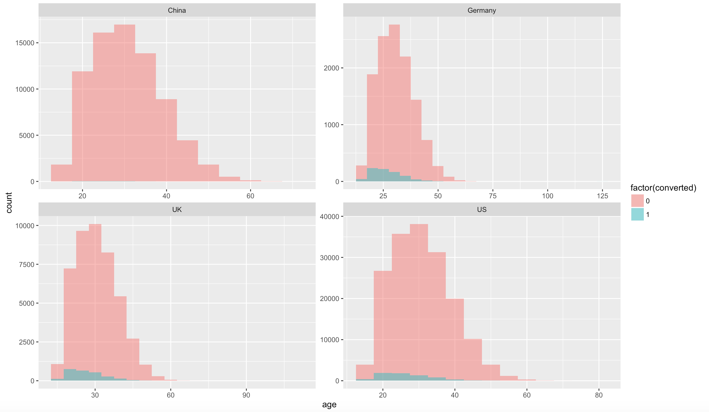
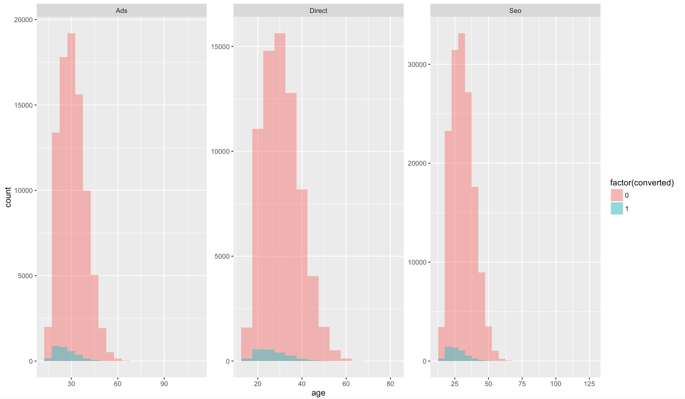
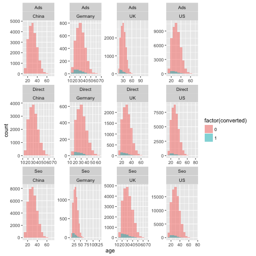
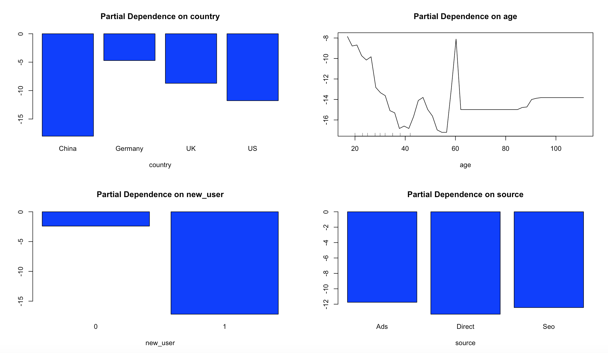
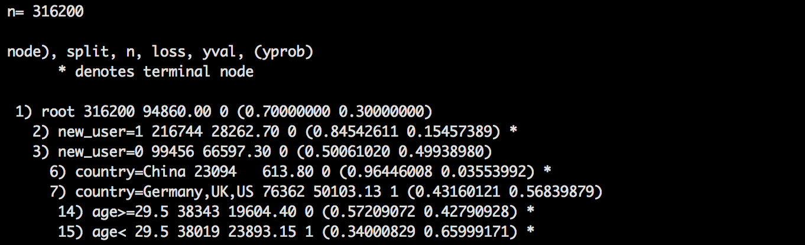

- Problem Statement & Data
- Exploratory Data Analysis
- Machine Learning
- Summary
Data Mining in the Application of E-Commerce Website
Conversion Rate Prediction
Lawrence Siao
Outline
Problem Statement & Data
Problem Statement
about users who hit our site: whether they converted or not as well as some of their characteristics such as:
- their country - country
- the marketing channel - source
- their age - age
- whether they are repeat users - new_user
- the number of pages visited during that session - total_pages_visited
Data
require(data.table)
data = fread('conversion_data.csv',header = T,stringsAsFactors = T)
kable(data[1:10,], format = "markdown",row.names = FALSE)
## Error in eval(expr, envir, enclos): could not find function "kable"
Data
kable(summary(data))
## Error in eval(expr, envir, enclos): could not find function "kable"
- seems a U.S. site
- Max age 123 seems does not make sense
So, let's dig in the distribution of age
Distribution of Age
data %>% ggplot(aes(x=age)) + geom_histogram(binwidth=5)

Distribution of Age
sort(data$age,decreasing = T)[1:20]
## [1] 123 111 79 77 73 72 70 70 69 69 69 68 68 68 68 68 67
## [18] 67 67 67
kable(subset(data, age>100))
## Error in eval(expr, envir, enclos): could not find function "kable"
Seems these 2 obervations (of 316200) are just unrealistic on the age dimension,
Thus, we could
1. try to figure out whether there is a bug in the data collection mechanism
2. just remove these two from the data set (althought it might not cause changes to the result )
Exploratory Data Analysis
EDA - country
data %>% group_by(country) %>% summarise(conversion_rate = mean(converted)) %>%
ggplot(aes(x=country,y=conversion_rate,fill=country))+geom_bar(stat='identity')

EDA - total_pages_visited
data %>% group_by(total_pages_visited) %>% summarise(conversion_rate = mean(converted)) %>%
ggplot(aes(x=total_pages_visited,y=conversion_rate))+geom_line(stat='identity')

EDA - new_user
data$new_user = data$new_user %>% as.factor(.)
data %>% group_by(new_user) %>% summarise(conversion_rate = mean(converted)) %>%
ggplot(aes(x=new_user,y=conversion_rate,fill=new_user))+geom_bar(stat='identity')

- users with older accounts have high conversion rate
EDA - source
data %>% group_by(source) %>% summarise(conversion_rate = mean(converted)) %>%
ggplot(aes(x=source,y=conversion_rate,fill=source))+geom_bar(stat='identity')

- users with older accounts have high conversion rate
EDA - source
t.test(data[source=='Ads',converted],data[source=='Seo',converted])$p.value
## [1] 0.03711654
- The difference between source is significant
EDA - source, country
data %>% group_by(country,source) %>% summarise(conversion_rate = mean(converted)) %>%
ggplot(aes(x=country,y=conversion_rate,fill=source))+geom_bar(stat='identity',position=position_dodge())

- China is the much different from others
EDA - age
data %>% ggplot(aes(x=age,fill=factor(converted))) +
geom_histogram(binwidth = 5,alpha=.5, position="identity")

- the age distribution of those who do not convert is symmetric, but thosewho converted is right-skewed
EDA - age vs. country
data %>% ggplot(aes(x=age,fill=factor(converted))) + geom_histogram(binwidth = 5,alpha=.5, position="identity") + facet_wrap(~country,scales = "free")

- Those users from China seldom converted
EDA - age vs. source
data %>% ggplot(aes(x=age,fill=factor(converted)))+ geom_histogram(binwidth = 5,alpha=.5, position="identity") + facet_wrap(~source,scales = "free")

- no significant difference among sources
EDA - age vs. new_user
data %>%
ggplot(aes(x=age,fill=factor(converted)))+geom_histogram(binwidth = 5,alpha=.5, position="identity") + facet_wrap(~new_user,scales = "free")

- no significant difference among sources
EDA - age, source , country
data %>%
ggplot(aes(x=age,fill=factor(converted)))+geom_histogram(binwidth = 5,alpha=.5, position="identity") + facet_wrap(~source+country,scales = "free")

Machine Learning
Machine Learning
require(randomForest)
set.seed(9999)
data$converted = as.factor(data$converted)
data$new_user = as.factor(data$new_user)
# split it into training/testing sets
train_sample = sample(nrow(data), size = nrow(data)*0.66)
train_data = data[train_sample,]
test_data = data[-train_sample,]
rf = randomForest(y=train_data$converted, x = train_data[, -ncol(train_data),with=FALSE],
ytest = test_data$converted, xtest = test_data[, -ncol(test_data),with=FALSE],
ntree = 100, mtry = 3, keep.forest = TRUE)
Machine Learning
rf

- OOB and test error is similar, 1.43% vs. 1.49%
- 1.49% < 3.2% (if we classified everything as non converted)
Let's the importance of each feature
Feature Selection
varImpPlot(rf,type=2)

- The most important is total_pages_visited, which is not helpful
- People who want to purchase will also need to visit more
Feature Selection
remove 'total_pages_visited' and try again
rf = randomForest(y=train_data$converted, x = train_data[, -c(5, ncol(train_data)),with=FALSE],
ytest = test_data$converted, xtest = test_data[, -c(5, ncol(train_data)),with=FALSE],
ntree = 100, mtry = 3, keep.forest = TRUE,classwt = c(0.7,0.3))
Feature Selection
varImpPlot(rf,type=2)

- New user is the most important feature
- Source is less important
Partial Dependence Plot
op <- par(mfrow=c(2, 2))
partialPlot(rf, train_data, country, 1)
partialPlot(rf, train_data, age, 1)
partialPlot(rf, train_data, new_user, 1)
partialPlot(rf, train_data, source, 1)

Feature Selection
Insights:
1.Users with an old account are much better than new users
2.China is really bad, all other countries are similar with Germany being the best
3.The site works very well for young people and bad for less young people
4.Source is irrelevant
Machine Learning
Use a simple decision tree to see the first few segments
require(rpart)
(tree = rpart(data$converted ~ ., data[, -c(5,ncol(data))],
control = rpart.control(maxdepth = 3),
parms = list(prior = c(0.7, 0.3))))

Machine Learning
Implications:
1. new_user is the first rule
2. wether from China or not is the second rule
2. 29.5 years old is a threshold for age
Summary
Summary
The site is working very well for young users, so we could tell marketing to advertise and use marketing channel which are more likely to reach young people.
The conversion for Germany is high, but now the users from Germany is low, less than UK. However, the population in Germany is greater than UK. So, there is great opportunity at Germany.
Those with old accounts perform better at conversion rate. So maybe send them EDM to bring them back to our website will be a good idea.
The conversion rate for older users is relatively low. So the UX for older people might not friendly enough.
The conversion rate at China is terriblely low, it is probably either poorly translated, or maybe it's totally in English. So it's very important to modify the UX for Chinese, the numbers of user from China is very amazing.